HOME
ABOUT ME
MY SKILLS
About me
Video Editing
For 4 years, I'm interested in Visual Effects and Video Editing.
Two years ago, I started to teach myself in the area of Video Editing and Visual Effects. I started with a few simple edits and got better and better. Through the practice with the program After Effects, I also learned the program Premiere Pro. Two years ago, I mastered more than the basics of After Effects and Premiere Pro.
Programming

I started programming with the Visual Basic programming language four years ago. A year later I learned C#, which I have been working with so far. With C# I got a lot of insights into the language and started working with WPF and Web-Pages. Furthermore, I own basic knowledge in the programming languages: PHP, Python and JavaScript
Web-Design
Two years ago I started working with a website builder, a program that allows you to create your own website quickly, easily and with just a few clicks. A year later I started learning the markup language HTML and CSS to realize my first 100% self-made website. For 3 months I started learning the language JavaScript.
My Skills